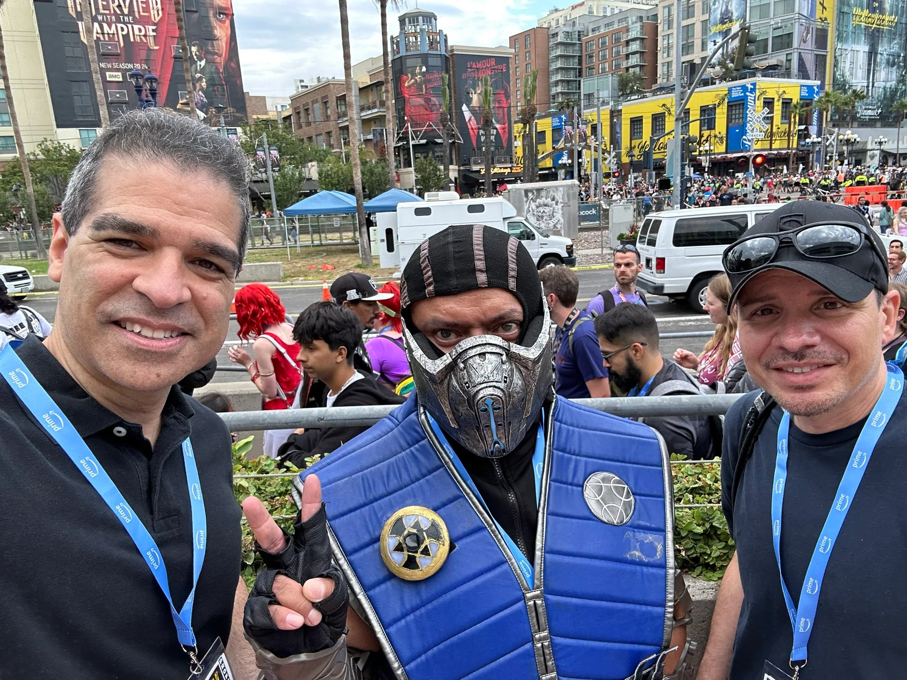
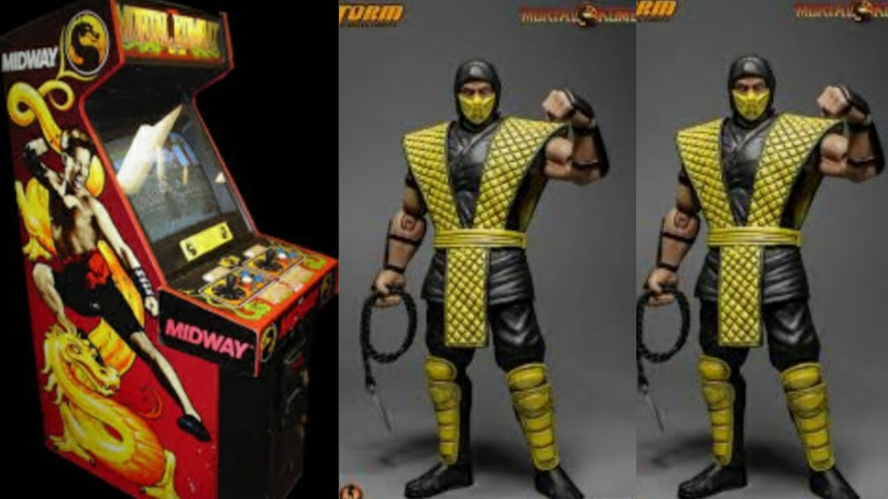
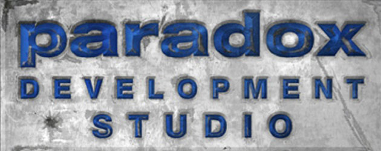

Os criadores da franquia Mortal Kombat são Ed Boon e John Tobias, responsáveis por lançar o primeiro jogo da série em 1992. Ed Boon, em particular, foi uma figura essencial na direção e supervisão dos jogos subsequentes, incluindo Shaolin Monks. Embora John Tobias não tenha participado diretamente do desenvolvimento deste título específico, sua influência na mitologia e na construção dos personagens da franquia ainda foi fundamental para a base do universo do jogo.
O jogo chegou ao mercado em setembro de 2005, com datas específicas: 19 de setembro de 2005: Lançamento nos Estados Unidos. 30 de setembro de 2005: Lançamento na Europa.
O desenvolvimento de Mortal Kombat: Shaolin Monks foi liderado por duas equipes principais: Midway Studios Los Angeles: Esta equipe foi responsável por concretizar a visão do jogo, desde os gráficos até a jogabilidade inovadora. Paradox Development: Atuou no suporte ao desenvolvimento, contribuindo com a parte técnica e ajudando a criar um jogo fluido que foi bem recebido pelos fãs. A união dessas equipes resultou em um jogo de ação e aventura que se destacou por oferecer uma experiência co-op e expandir a narrativa dos personagens Liu Kang e Kung Lao.
O jogo foi publicado pela Midway Games, uma empresa americana que ficou famosa por produzir e distribuir a série Mortal Kombat. Midway era uma gigante dos videogames nos anos 1990 e início dos anos 2000, até ser adquirida pela Warner Bros. Interactive Entertainment em 2009.